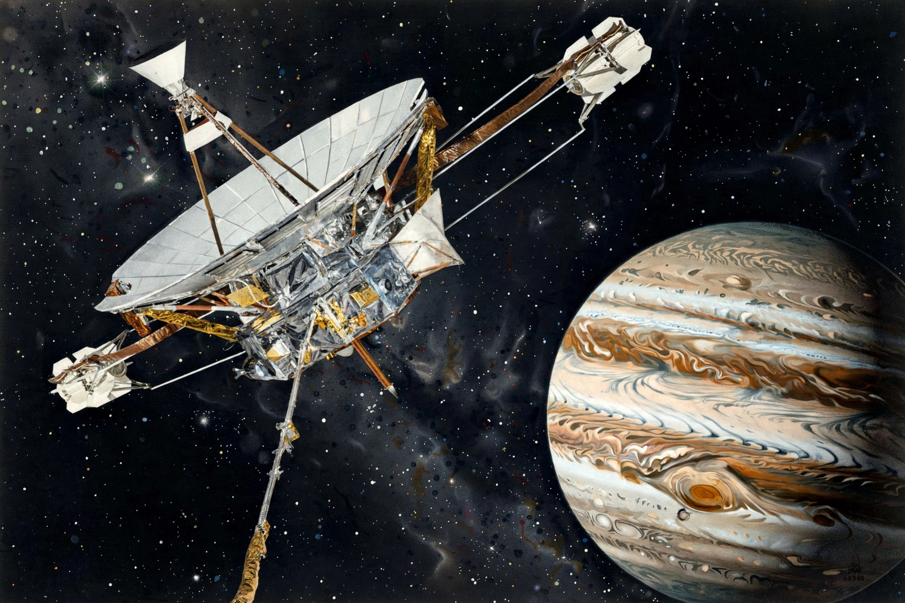

Pioneer 10 (originally designated Pioneer F) is a NASA space probe launched in 1972 that completed the first mission to Jupiter and became the first human-made object to leave the vicinity of the major planets on a trajectory out of the Solar System. It carries the Pioneer plaque, a gold-anodized aluminum message intended for any extraterrestrial civilization that might recover it.

| Mission type | Jupiter flyby; interstellar trajectory |
|---|---|
| Operator | NASA / Ames Research Center |
| Launch | March 3, 1972 (UTC), Cape Canaveral, Atlas-Centaur |
| Jupiter flyby | December 4, 1973 (closest approach ~132,252 km) |
| Last contact | January 23, 2003 |
| Mass | 258 kg |
| Power | Radioisotope thermoelectric generators (RTGs) |
Pioneer 10 crossed the asteroid belt safely — a major uncertainty at the time — and on December 4, 1973 made the first close flyby of Jupiter, returning the first close-up images of the giant planet, mapping its intense radiation belts and magnetic field, and confirming it is largely liquid. On June 13, 1983 it crossed the orbit of Neptune, then the most distant planet, becoming the first artifact to travel beyond all the known planets.
The probe's official mission ended in 1997, but engineers continued weak-signal contact until January 2003, when the spacecraft was about 12 billion km (80 AU) from Earth and its power too low to sustain transmission. Analysis of its tracking data revealed a tiny unexplained deceleration, dubbed the Pioneer anomaly, later attributed to anisotropic thermal radiation from the spacecraft itself. Pioneer 10 heads in the general direction of the star Aldebaran, which it will pass in more than two million years.
Designed by Carl Sagan, Linda Salzman Sagan, and Frank Drake, the Pioneer plaque depicts a man and woman, the hydrogen hyperfine transition, the Sun's position relative to galactic pulsars, and a diagram of the Solar System showing the probe's origin at Earth.
See also: Pioneer 11 · Pioneer program · Pioneer plaque · Voyager program